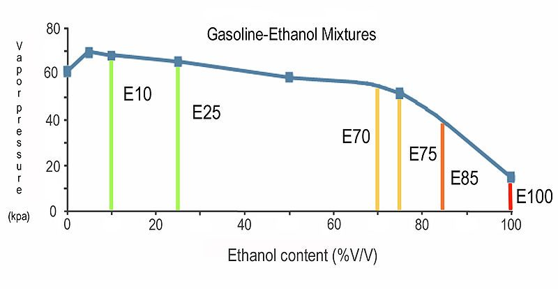

Many fuels now contain ethanol, a type of alcohol. A small share is normal, and many engines accept it, but check your bike's manual for the highest share allowed. Alcohol takes up water, can harm old rubber parts and tank coatings, and makes cold starting harder. A simple shake test with water shows roughly how much alcohol is in a sample. Ready-made testers are sold in kit form, or a clear tube can be used.
Safety
- Fuel vapour burns and explodes. Work outdoors, with no smoking and no flames near.
- Cap the tube before shaking. An open tube sprays fuel.
- Dispose of the sample as fuel waste. Do not pour it on the ground or into a drain.
You need
- A clear tube with a tight cap, taller than it is wide.
- Water, a marker, and a fuel sample from the tank or from the pump.
Steps
- Mark two lines on the tube. The lower line is the water line, at about one quarter of the height you will fill to. The upper line is the fuel line.
- Fill the tube with water to the lower line.
- Add fuel up to the upper line. Cap the tube tightly.
- Shake it well for a short time. Stand the tube upright and leave it for about ten minutes.
- Look at the line between the layers. If the water layer is still at the lower mark, the fuel has no alcohol. If the water layer is deeper, the extra depth is alcohol that moved into the water.
- To estimate the share, compare the extra depth with the depth of the fuel layer. A rise of about one tenth of the fuel depth means roughly 10 percent alcohol. The method is approximate.
Check your work
- Repeat with a fresh sample if the line is unclear. Compare with fuel from another station.
- Compare the result with the highest alcohol share in your bike's manual.
If it did not fix the problem
- Alcohol share is above the manual limit: drain the tank and refill, see Drain old or contaminated fuel.
- Free water in the tank: Water or dirt in the fuel.
- Hard cold starts, hard rubber or swollen parts: Problems after using ethanol blend fuel.